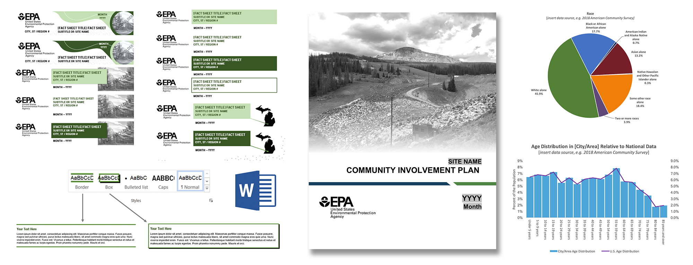

Creating Templates for Everyone
During my time as a contractor for the U.S. Environmental Protection Agency, one of our headquarters clients expressed a need for staff across the country to be able to create effective, attractive layouts, without specialized design software such as Adobe products, and with little to no technology savvy or design experience. I led the development of modular templates in Microsoft Word, featuring a pallette of pre-made layout and information blocks, created using the built-in function, Quick Parts. The templates allowed staff to create long-form reports in a fraction of the time, with no prior knowledge and nothing more than Microsoft Word. The templates were developed to be highly customizable, with pre-made graphics, charts, styles and pre-fabricated Quick Part elements.